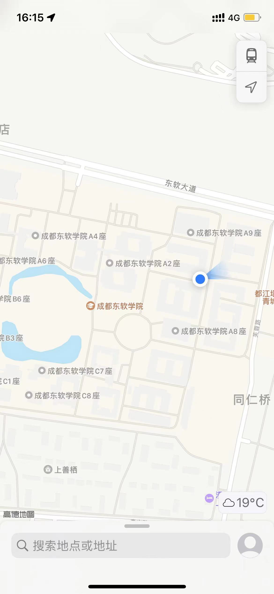

负责重点项目的前端方案和架构的研发和维护工作；
5年以上开发经验，精通html/css3/Javascrip等web开发技术；
熟悉bootstarp,vue,angularjs,reacjs等框架，熟悉掌握一种以上；
代码风格严谨，能高效保真还原原稿设计，能兼容各种浏览器；
对web前端的性能优化以及web常见漏洞有一定的了解和相关实践；
具备良好的分析解决问题能力，能独立承担任务，有开发进度的把控能力；
责任心强，思路清晰，抗压能力好，具备良好的对外沟通和团队协作能力；
成都东软学院D11-304
